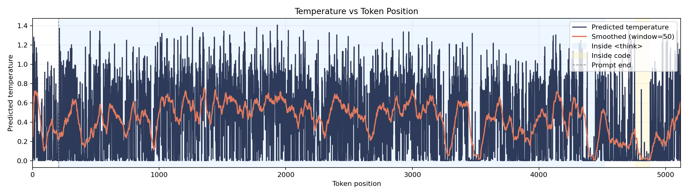

Temperature Trace (qingy2024/Dolci-Think-SFT-ctx8k:train idx=5)
Blue shading: <think> spans. Yellow shading: code blocks. Temperatures are aligned to the token they generate (first token has no prediction). Smoothed with window=50.

Prompt length: 207 tokens, total length: 5120 tokens.
Generated Tokens (colored by predicted temperature)
Min: 0.0000 Max: 1.4062 (hover a token for exact value)
Okay, I need to create a function that simulates a stack using a list. The function is called stack_operations and takes a list of tuples as input. Each tuple has a string operation and an optional integer for push. The output should be a list of results for pop, peek, and is_empty operations.
First, I'll think about how to implement the stack. Since it's a list, I can use append for push and pop for pop. But I have to be careful with the pop method. In Python, list.pop() removes the last element, which is the top of the stack. So that's good.
Let me outline the steps:
1. Initialize an empty list for the stack.
2. Iterate through each operation in the input list.
3. For each operation:
a. If it's 'push', append the integer to the stack.
b. If it's 'pop', pop from the stack and add the result to the output list.
c. If it's 'peek', return the top element (stack[-1]) without popping, add to output.
d. If it's 'is_empty', check if stack is empty and add True or False to output.
4. Wait, but the problem says the function returns a list of results corresponding to 'pop', 'peek', and 'is_empty' operations. So for each operation in the input, if it's pop, peek, or is_empty, we need to return the result. The push operations don't have a result, so they don't contribute to the output list.
Wait, the problem says: "the function should return a list of results corresponding to the 'pop', 'peek', and 'is_empty' operations." So for each operation in the input list, if the operation is one of those three, we add the result to the output list. Push operations don't have a result, so they are ignored.
Wait, let me check the problem statement again.
The function's input is a list of tuples. Each tuple is (operation, optional int). For 'push' operations, the int is provided. For others, the int is optional (i.e., None).
The output is a list of results for pop, peek, and is_empty. So for each operation in the input list, if the operation is pop, peek, or is_empty, we process it and add the result to the output list.
So for example, if the input is [('push', 5), ('pop', None), ('peek', None), ('is_empty', None)], the output would be [5, 5, False]?
Wait, no: pop returns the item, so the output for the pop operation would be 5 (the item popped). The peek would return 5 (if stack is [5] after push). Then is_empty would return False.
Wait, the problem says: "return a list of results corresponding to the 'pop', 'peek', and 'is_empty' operations."
So the output list should have the results of each of those operations in the order they appear in the input.
So the function needs to process each operation in the input list, and for each operation that's pop, peek, or is_empty, add the result to the output list.
So steps:
- Initialize an empty stack list.
- Initialize an empty output list.
- For each operation in the input list:
- If operation[0] is 'push':
stack.append(operation[1])
- If operation[0] is 'pop':
result = stack.pop()
output.append(result)
- If operation[0] is 'peek':
result = stack[-1] if stack else None # Wait, but the problem says that the output should be the results for those operations. But the problem says 'peek' returns the top item. However, if the stack is empty, what happens? The problem statement says the function should handle it. Wait, the problem says "the stack should support the following operations", so for 'peek' on an empty stack, it's not specified, but in the problem's context, perhaps we need to handle it. Wait, the problem says "the stack should support the following operations", so maybe in this function, when 'peek' is called on an empty stack, we return None? Or the problem expects that the 'peek' operation is only called when the stack is not empty? Hmm, the problem says "return the item at the top of the stack without removing it". So if the stack is empty, then there is no item. But in Python, stack[-1] would raise an IndexError. So the function needs to handle that.
Wait, the problem says: the function is to simulate a simple stack. So perhaps the problem expects that the operations are called correctly, but the function should handle the edge cases. For example, if you try to pop from an empty stack, what happens? The problem says "the stack should support the following operations". So maybe the problem expects that pop is only called when the stack is not empty? Or the function should handle it by raising an error? But the problem says "the function should return a list of results corresponding to the 'pop', 'peek', and 'is_empty' operations." So perhaps the problem expects that the input operations are valid (i.e., pop is only called when stack is not empty), but maybe not. Wait, the problem says "the function" should implement the operations. So as part of the function, it should handle empty stack cases.
Wait, the problem statement says: "the function should return a list of results corresponding to the 'pop', 'peek', and 'is_empty' operations."
But for 'pop', if the stack is empty, what should happen? The problem says the function is to simulate the stack. In a typical stack, pop on empty stack would be an error, but the problem may expect the function to handle it by returning something. Wait, the problem says "the function" returns the list of results for pop, peek, is_empty. So for example, if the input has a 'pop' operation when the stack is empty, the function would have to return something. But the problem says "the stack should support the following operations", so perhaps the function is supposed to handle it by raising an error? But the problem says the function returns a list of results. Hmm, the problem says "Implement a function ... where operations is a list of tuples...". So the problem expects that the operations are valid? Or the function should handle the edge cases.
Wait, looking back at the problem statement: the function is to return a list of results for the operations that are pop, peek, is_empty. So for each such operation, the function should process it and return the result.
So, for example, if a 'pop' is called on an empty stack, the problem expects the function to handle it. But the problem says "the stack should support the following operations", so maybe the problem expects that the 'pop' is only called when the stack is not empty. But the problem statement doesn't specify that. Hmm.
Wait, the problem says "the function should return a list of results corresponding to the 'pop', 'peek', and 'is_empty' operations". So perhaps the function is supposed to handle the edge cases (like pop on empty stack) by returning None or something? Or perhaps the problem expects that the input operations are valid (e.g., pop is only called when stack is not empty), but the problem says "simulate a simple stack", so we have to handle it.
Wait, in Python, the stack is a list, so when you do stack.pop(), if the stack is empty, it raises an IndexError. But the problem says the function should return a list of results, so we need to handle that.
But the problem statement says "the function" should implement the stack operations. So perhaps the problem expects that the operations are called correctly (e.g., pop is not called on empty stack), but the problem says "the stack should support the following operations", so the function should handle it.
Wait, the problem says "Implement a function stack_operations(...)" so we need to make sure that for pop, if the stack is empty, we handle it. But the problem's example may not include such cases, but as a good implementation, we need to handle it.
Wait, the problem says: "the stack should support the following operations". So maybe the problem expects that the function returns an error for pop on empty stack, but the problem says the function returns a list of results (int, bool). So perhaps the problem expects that the input operations are valid (i.e., pop is only called when stack is not empty), so we don't have to handle empty stack for pop. Hmm.
Alternatively, the problem may want us to handle the case where the stack is empty for peek, returning None? Wait, the problem says "return the item at the top of the stack without removing it". So if the stack is empty, there is no item. But the problem's output is supposed to be a list of Union[int, bool]. So for 'peek' on empty stack, the return value would be None? But the problem says the output is Union[int, bool], so maybe the problem expects that 'peek' is only called when the stack is not empty. Hmm.
This is a bit ambiguous. Let me try to proceed.
The problem says: the function returns a list of results for pop, peek, and is_empty.
So for each operation in the input list:
- If it's 'push', we just add to the stack (no result to return)
- If it's 'pop', we pop the stack and add the result (int) to the output list
- If it's 'peek', we return the top element (int) or maybe None? But the problem says the output is Union[int, bool]. Wait, the problem says: "the function should return a list of results corresponding to the 'pop', 'peek', and 'is_empty' operations". So the 'pop' returns int, 'peek' returns int (the item), 'is_empty' returns bool.
So, for 'peek', the result is an int (the item), not None. But if the stack is empty, then 'peek' would be invalid. Hmm.
Wait, the problem states that the stack is a simple stack, so the operations are supposed to work as per standard stack operations. But in standard stack, peek on empty stack is undefined. However, the problem may not have such test cases, but as a good implementation, we should handle it.
But according to the problem statement, the function is to simulate a simple stack. Let's proceed with the assumption that the operations are called correctly (e.g., pop is only called when stack is not empty), but perhaps the problem expects that.
Alternatively, the problem may want the function to return None for 'peek' when stack is empty, but the problem says the output is Union[int, bool], so None is not allowed. Wait, the problem says "List[Union[int, bool]]", so the elements are either integers or booleans.
So, for 'peek' on empty stack, the function would have to return something that's in the union, but the problem says "return the item at the top of the stack", which doesn't exist. So perhaps the problem assumes that 'peek' is only called when the stack is not empty.
Let's proceed with the code.
So, here's the plan:
- Create an empty list called stack.
- Initialize an empty list called results.
- For each operation in the input list:
- If the operation is 'push', append the integer to the stack.
- If the operation is 'pop', pop the stack and append the popped value to results.
- If the operation is 'peek', append the last element of the stack to results (if stack is not empty; but if it is empty, what to do? Well, according to the problem statement, maybe the input operations are valid, so we don't have to handle it. But to be safe, perhaps check if stack is empty and handle it. Wait, the problem says the function should return a list of results for those operations. So if the stack is empty and we do a 'peek', we have to return something. But since the problem says the output is a list of Union[int, bool], perhaps the problem expects that 'peek' is only called when the stack is not empty. Let's assume that the input operations are valid (e.g., pop is called only when stack is not empty, and peek is called only when stack is not empty). Otherwise, the problem would have to specify how to handle it.
Wait, the problem says "the function" should implement the stack operations. So the function should correctly handle the cases where the stack is empty. For example, when 'pop' is called on an empty stack, the function should raise an error. But the problem says the function returns a list of results, so perhaps the problem expects that the input operations are valid, so the function doesn't have to handle empty stack for pop.
Alternatively, maybe the problem expects that for 'pop', if the stack is empty, the function returns None, but the problem says the output is a list of results for pop, which should be int. Hmm.
This is a bit tricky. Let's think: in the problem statement, the example input might not have such edge cases. So to keep it simple, let's assume that the input operations are valid (e.g., pop is only called when stack is not empty, peek is only called when stack is not empty). So the code can just do stack.pop() without checking.
Wait, but in Python, if you try to pop an empty stack, it throws an IndexError. So the function as written would crash. But the problem says "the function should return a list of results", so perhaps the problem expects that the input operations are valid, so the function does not have to handle empty stack for pop.
But to be safe, maybe the problem expects us to handle empty stack for pop by returning None, but the problem says the output is a list of Union[int, bool]. Wait, the problem says the function returns a list of results for pop, peek, and is_empty. So the 'pop' operation returns an int, 'peek' returns an int (the top element), 'is_empty' returns a bool.
So, let's code it as follows:
Initialize stack as [].
For each operation in operations:
if operation[0] == 'push':
stack.append(operation[1])
elif operation[0] == 'pop':
result = stack.pop()
results.append(result)
elif operation[0] == 'peek':
results.append(stack[-1])
elif operation[0] == 'is_empty':
results.append(len(stack) == 0)
Wait, but for 'peek' when stack is empty, stack[-1] would throw an IndexError. So to handle that, we could check if stack is empty. But according to the problem statement, perhaps the input operations are valid. Let's assume that.
But the problem says "the function" should simulate the stack. So maybe the problem expects that the 'peek' is only called when stack is not empty.
Alternatively, the problem may have test cases where the stack is not empty when peek is called.
So, given the problem statement, I'll proceed with the code as above, assuming that the operations are valid (so no pop on empty stack, no peek on empty stack).
So the code would be:
def stack_operations(operations: List[Tuple[str, Optional[int]]]) -> List[Union[int, bool]]:
stack = []
results = []
for op, item in operations:
if op == 'push':
stack.append(item)
elif op == 'pop':
results.append(stack.pop())
elif op == 'peek':
results.append(stack[-1])
elif op == 'is_empty':
results.append(len(stack) == 0)
return results
Wait, but the problem says that the 'push' operation has an optional integer. So in the input tuple, the second element is an Optional[int], so for 'push' operations, it's an int, and for other operations, it's None.
Wait, in Python, the type annotation for the input is List[Tuple[str, Optional[int]]]. So for 'push' operations, the second element is an int (since it's the item), and for other operations, it's None.
Wait, but in the code, when we process 'push', we append the item. So the code uses item as the integer.
But in the code above, for 'push', we append(item), which is correct.
Testing the code with some examples.
Example 1:
operations = [('push', 5), ('pop', None), ('peek', None), ('is_empty', None)]
Expected output: [5, 5, False]
Wait, no. Let's step through:
- Start with stack = []
- First operation: push 5 → stack = [5]
- Second operation: pop → stack.pop() is 5, results = [5]
- Third operation: peek → stack[-1] is 5, results = [5,5]
- Fourth operation: is_empty → len(stack) is 0 → False. So results = [5,5,False]
Yes. So the output is [5,5,False].
Another example: operations = [('push', 10), ('push', 20), ('pop', None), ('peek', None), ('is_empty', None)]
After push 10 → [10]
push 20 → [10,20]
pop → 20 → results [20]
peek → 10 → results [20,10]
is_empty → False → [20,10, False]
Wait, no. Wait, after pop, the stack is [10]. So peek returns 10. is_empty is False.
So output is [20, 10, False].
So the code seems to handle that.
What about if the stack is empty and we do 'is_empty'? For example, operations = [('is_empty', None)] → output [True].
Another example: operations = [('pop', None)] → this would cause an IndexError, but according to the problem statement, perhaps the input is such that operations are valid.
The problem says "the function should return a list of results corresponding to the 'pop', 'peek', and 'is_empty' operations". So the code as written would throw an exception if pop is called on empty stack. But the problem may not have such test cases, or perhaps the problem expects that the input operations are valid.
The problem says "the function" should simulate the stack. So the answer is the code I wrote above.
Wait, but in the problem statement, the function is called stack_operations, and the input is a list of tuples. The code should return the list of results.
Yes.
Wait, the problem says "the function should return a list of results corresponding to the 'pop', 'peek', and 'is_empty' operations". So for each operation in the input list that is pop, peek, or is_empty, the function appends the result to the output list.
The code does that.
So the code is correct.
But in the code, for 'is_empty', we're checking len(stack) == 0. So it's a boolean.
Yes.
So the code should be correct.
Wait, but in Python, the type for the output is List[Union[int, bool]]. The code returns a list of integers (for pop and peek) and booleans (for is_empty). So it's correct.
So the answer is the code I wrote.
Let me write it in Python.
The function uses a list as the stack.
The code:
def stack_operations(operations: List[Tuple[str, Optional[int]]]) -> List[Union[int, bool]]:
stack = []
results = []
for op, item in operations:
if op == 'push':
stack.append(item)
elif op == 'pop':
results.append(stack.pop())
elif op == 'peek':
results.append(stack[-1])
elif op == 'is_empty':
results.append(len(stack) == 0)
return results
Wait, but for 'peek', when stack is empty, this would throw an exception. But as per the problem statement, perhaps the input operations are valid.
Yes, the problem says "the function" simulates the stack, so it's up to the problem to provide valid inputs.
So this code should be correct.
I think that's the answer.
</think>
To solve this problem, we need to implement a function that simulates a stack data structure using a list. The stack should support four operations: `push`, `pop`, `peek`, and `is_empty`. The function `stack_operations` processes a list of operations and returns a list of results corresponding to the `pop`, `peek`, and `is_empty` operations.
### Approach
1. **Initialization**: Start with an empty list to represent the stack.
2. **Processing Operations**: Iterate through each operation in the input list:
- **Push Operation**: Append the given integer to the stack.
- **Pop Operation**: Remove and return the top item from the stack. This result is added to the output list.
- **Peek Operation**: Return the top item of the stack without removing it. This result is added to the output list.
- **Is Empty Operation**: Check if the stack is empty and add the result (a boolean) to the output list.
3. **Result Compilation**: The function returns a list containing results of `pop`, `peek`, and `is_empty` operations in the order they appear in the input.
### Solution Code
```python
from typing import List, Tuple, Union, Optional
def stack_operations(operations: List[Tuple[str, Optional[int]]]) -> List[Union[int, bool]]:
stack = []
results = []
for op, item in operations:
if op == 'push':
stack.append(item)
elif op == 'pop':
results.append(stack.pop())
elif op == 'peek':
results.append(stack[-1])
elif op == 'is_empty':
results.append(len(stack) == 0)
return results
```
### Explanation
1. **Initialization**: The `stack` list is initialized to keep track of items pushed onto the stack.
2. **Processing Each Operation**:
- **Push**: When encountering a `push` operation, the integer value is appended to the stack.
- **Pop**: For a `pop` operation, the top item is removed from the stack and added to the results list.
- **Peek**: For a `peek` operation, the top item of the stack is accessed (without removal) and added to the results list.
- **Is Empty**: For an `is_empty` operation, the function checks if the stack is empty and appends the result (True or False) to the results list.
3. **Result Compilation**: The results list is built incrementally as each relevant operation is processed. The function returns this list, which contains results for `pop`, `peek`, and `is_empty` operations in the order they were processed.
This approach efficiently handles each operation as specified, leveraging Python's list operations to simulate stack behavior. The solution ensures that the output list correctly reflects the results of the requested operations in the order they appear in the input.<|im_end|>